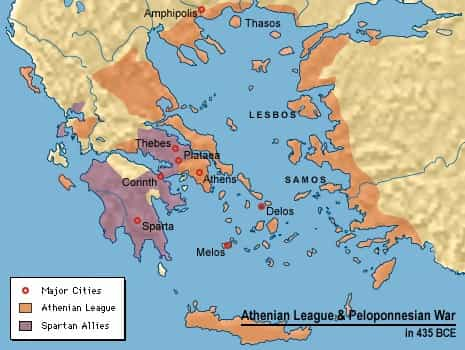

Samseau is a player philosopher psychologist who enjoys a good discussion. You can follow him on Twitter.


This story will teach you about the sublime uselessness of morality.
Halfway through the Peloponnesian War, the Athenians decided to complete their hegemony over the Aegean Sea by capturing the only remaining island not yet under their control, the island of Melos. Melos was originally a Spartan colony, but as the war between Sparta and Athens raged on, Melos remained neutral. This was not good enough for Athens. The Athenians took a fleet to Melos to demand monetary tribute and, should they refuse, press war.

Before waging war, the Athenians sent an envoy to try and negotiate with the Melians. The envoys, instead of being given an audience in front of the people of Melos, were taken aside to speak with the magistrates and other powerful men of the island. When greeted in such a fashion, the Athenians opened,
Since the negotiations are not to go on before the people, in order that we may not be able to speak straight on without interruption, and deceive the ears of the multitude by seductive arguments which would pass without refutation (for we know that this is the meaning of our being brought before the few), what if you who sit there were to pursue a method more cautious still! Make no set speech yourselves, but take us up at whatever you do not like, and settle that before going any farther. And first tell us if this proposition of ours suits you.
And the stage was set. Because the discussion would be held apart from the masses, there would be no need for rhetoric, flowery language, or flattery. This would be a frank and no-bullshit rejoinder with only self-interest as a guide.
Understanding the great danger they were facing, the Melians replied,
To the fairness of quietly instructing each other as you propose there is nothing to object; but your military preparations are too far advanced to agree with what you say, as we see you are come to be judges in your own cause, and that all we can reasonably expect from this negotiation is war, if we prove to have right on our side and refuse to submit, and in the contrary case, slavery.
In other words, the Melians did not feel they had much of a choice – war or slavery. What could they do except resist in the face of such outcomes? But the Athenians were unmoved, and their reply tells a man everything he needs to know about humanity and morality:
For ourselves, we shall not trouble you with specious pretenses — either of how we have a right to our empire because we overthrew the Mede, or are now attacking you because of wrong that you have done us — and make a long speech which would not be believed; and in return we hope that you, instead of thinking to influence us by saying that you did not join the Spartans, although their colonists, or that you have done us no wrong, will aim at what is feasible, holding in view the real sentiments of us both; since you know as well as we do that right, as the world goes, is only in question between equals in power, while the strong do what they can and the weak suffer what they must.
And the offer was made: do what the strong want, or be crushed regardless of any protests to the contrary. For what else was there to say? The Athenians ruled the Aegean Sea, and Melos was powerless to stop them.

The Melians then tried to persuade the Athenians to halt their invasion. They argued morality – that it would be wrong to attack a neutral nation, and should Athens lose the war the Spartans would show no mercy to Athens due to their treatment of their colony Melos. But the Athenians merely replied that they were less concerned with being defeated by Sparta and more concerned with appearing strong to the rest of the city-states they controlled in the Aegean Sea – for should they let Melos remain free, it may embolden other Athenian tributary states enough to revolt.
The Athenians commanded them to either pay tribute to the Athenian empire or be destroyed. The Melians refused, and told them they would hold out for Spartan assistance. The Athenians remarked,
…we are struck by the fact, that after saying you would consult for the safety of your country, in all this discussion you have mentioned nothing which men might trust in and think to be saved by. Your strongest arguments depend upon hope and the future, and your actual resources are too scanty, as compared with those arrayed against you, for you to come out victorious.
[…]
…it is certain that those who do not yield to their equals, who keep terms with their superiors, and are moderate toward their inferiors, on the whole succeed best.
The Melians held against the Athenian siege for six months, until, as Thucydides reports,
Reinforcements afterwards arriving from Athens in consequence, under the command of Philocrates, son of Demeas, the siege was now pressed vigorously; and some treachery taking place inside, the Melians surrendered at discretion to the Athenians, who put to death all the grown men whom they took, and sold the women and children for slaves, and subsequently sent out five hundred colonists and inhabited the place themselves.
Then the Melians were no more. And the crimes the Athenians committed on that day were forgotten. At the end of the Peloponnesian War, with Sparta victorious, Athens was not punished in any significant way. It was Sparta who suffered the worst fate, as they were eventually conquered and utterly destroyed by the Thebians (who became strong because the Spartans eradicated the Plataeans). Meanwhile, Athens lived on, and continues to this day.
Out of everything I have discovered, there does not appear to be a truth more basic than this one. Forget notions of morality, karma, or afterlife justice – this world bows only to the strong, who do as they please, while the weak struggle to stay above the rising tides of history. If one wishes to take the advice given by the Kings here, then he must remember that the world he lives in operates according to this law, and, whenever faced with conflict, he must ask:
Who are the strong? Who are the weak? And to which category do I belong?
Therein will you find the answer to whatever situation you may be.
Read Next: What Does It Feel Like To Be Betrayed By Your Own Country?
(Note: For those who wish to read the entire dialogue written in masterful prose, I found a decent online translation here. Still not as good as a translation offered from Strassler’s edition, however.)